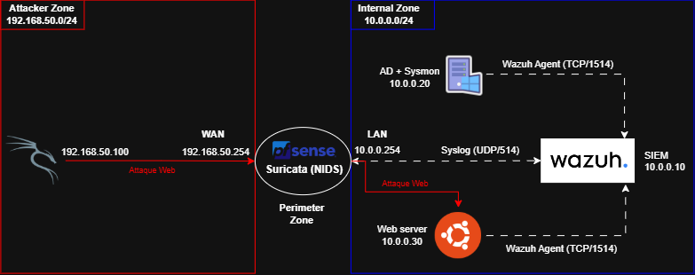
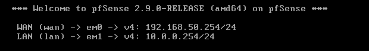

Hybrid SOC Deployment & Threat Detection
Duration: 10 days
Technologies: pfSense, Suricata, Wazuh, Elastic Stack, Windows Server (Sysmon), Ubuntu, Kali Linux.
1. Context & Business Objective
In modern corporate environments, centralizing security logs and maintaining strict network segmentation is critical for threat detection. The objective of this project is to build a hybrid Security Operations Center (SOC) lab from scratch. This infrastructure is designed to monitor both network traffic (via NIDS) and endpoint activity (via EDR), enabling real-time detection and automated response to simulated cyber attacks.
2. Technical Architecture
The environment is strictly segmented using a pfSense firewall to isolate the untrusted external zone from the internal corporate network, reflecting a realistic perimeter defense.

Figure 1: Virtual infrastructure design isolating the WAN (Attacker) and LAN (Enterprise) zones.- Red Zone (Attacker): Kali Linux (
192.168.50.100) situated on an isolated external network (VMnet1). - Perimeter (NIDS/Firewall): pfSense routing traffic between zones and hosting Suricata for network intrusion detection.
- Internal Zone (Targets): Windows Server with Sysmon (
10.0.0.20) and an Ubuntu Web Server (10.0.0.30) on an isolated internal network (VMnet2). - Defense Zone (SIEM): Wazuh Manager (
10.0.0.10) ingesting logs via Syslog and Wazuh Agents.
3. Deployment (Build)
3.1. Network Segmentation & Routing
To ensure strict isolation, the virtualization environment relies on custom Host-Only networks without local DHCP services. The routing is entirely handled by the central pfSense instance.
- WAN Interface (em0): Assigned to
VMnet1with static IP192.168.50.254/24. - LAN Interface (em1): Assigned to
VMnet2with static IP10.0.0.254/24. - WebConfigurator (HTTPS) enabled on the LAN interface for firewall management.

Figure 2: pfSense routing configuration establishing the foundation of the lab environment.
3.2. Firewall Initial Configuration
Access to the pfSense WebConfigurator was established via the internal LAN interface. To allow realistic attack simulations from the external Kali Linux machine, the default blockage of private networks (RFC1918) and bogon networks on the WAN interface was intentionally disabled. This critical adjustment ensures the firewall accurately routes and processes malicious traffic originating from the simulated external subnet (192.168.50.0/24).
3.3. Vulnerable Web Server Provisioning
An Ubuntu machine was provisioned within the internal zone (10.0.0.30) to act as the primary target for web-based attacks. To simulate a modern, realistic corporate application, the OWASP Juice Shop container was deployed via Docker.
sudo apt update && sudo apt install docker.io -y
sudo systemctl enable --now docker
sudo docker run -d -p 80:3000 bkimminich/juice-shop